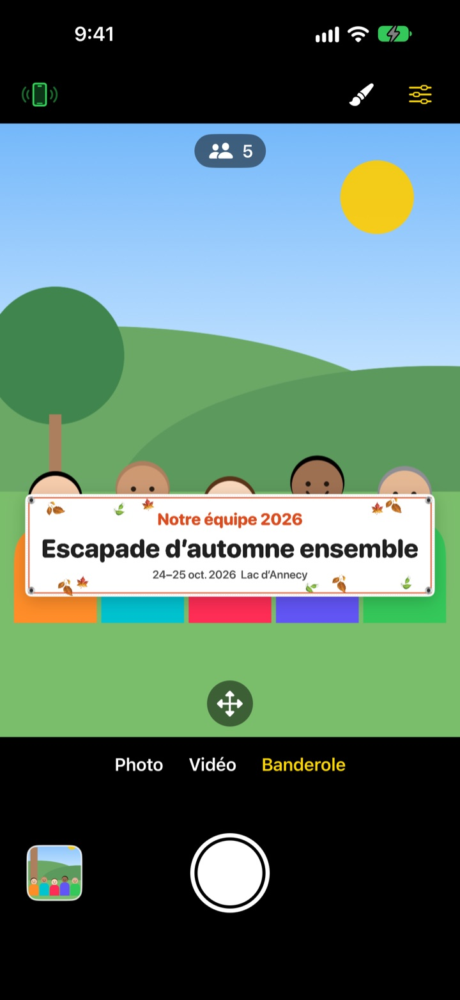
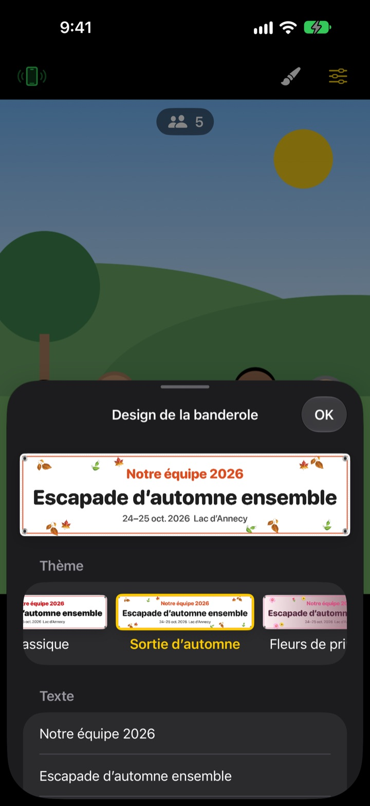

La photo de groupe avec banderole.
Sans rien imprimer.
Écrivez votre texte, choisissez un thème, et la banderole se place juste devant le groupe. L’iPhone d’un ami devient télécommande en scannant un QR code, et la personne qui prend la photo est enfin dessus.
Toutes les fonctions sont gratuites. iOS 17 ou version ultérieure.

Créez une banderole
Modifiez le texte et touchez un thème. Appuyez sur le déclencheur : comme dans l’app, un compte à rebours de 3 secondes précède la photo.
Commander une banderole pour une seule photo ?
On la commande, on la transporte jusqu’à la sortie, puis personne ne sait où la ranger. Et faute de photographe, il y a toujours quelqu’un hors du cadre. ShutterLink place la banderole dans l’image de la caméra et transforme l’iPhone d’un ami en télécommande, pour que tout le monde soit sur la photo, banderole comprise.
Une banderole à votre image en une minute
Choisissez parmi 13 thèmes, dont sortie d’automne, fleurs de printemps, fête de fin d’année, anniversaire, journée sportive, remise de diplôme, mariage ou atelier d’entreprise, puis écrivez jusqu’à trois lignes de texte.
Changez le fond, la police, les décorations, les couleurs et le format, et ajoutez votre logo. Tissu, vinyle ou papier : une banderole en tissu s’affaisse, se froisse et ondule au vent comme une vraie.

Une télécommande sans rien installer
Touchez le bouton télécommande en haut à gauche : un QR code s’affiche. Votre ami le vise avec l’app Appareil photo, et ShutterLink Remote s’ouvre aussitôt en App Clip et se connecte.
L’aperçu en direct de la télécommande montre même la banderole : cadrez, puis déclenchez. Chaque photo arrive tout de suite sur l’iPhone télécommande, si bien qu’un ami sans l’app peut l’enregistrer et la partager sur place.
Trois étapes pour commencer
- 1
Installez l’iPhone
Ouvrez ShutterLink et posez l’iPhone sur un trépied ou une étagère.
- 2
Placez la banderole
Choisissez Banderole en bas, réglez le texte et le thème avec le pinceau, puis touchez le sol à l’endroit où se tiendra le groupe.
- 3
Levez la main
Levez la paume ou appuyez sur le déclencheur de la télécommande. Le retardateur compte, puis prend la photo.
Pensé pour les photos de groupe
- Geste de la paume · déclencheur par applaudissement
- Levez la paume vers l’appareil ou frappez fort dans vos mains une fois pour lancer le retardateur
- Déclencheur par sourire
- Prend la photo tout seul quand tout le monde sourit les yeux ouverts
- Retardateur 3 · 5 · 10 · 20 · 30 s
- Une voix compte à rebours, le flash clignote en rythme et la télécommande vibre dans la main
- Demander à tous de regarder l’objectif
- Touchez-le et l’iPhone qui photographie interpelle le groupe à voix haute
- Rafale de 3 · 5 photos
- Garde la meilleure photo, celle où tout le monde a les yeux ouverts. Vous pouvez en choisir une autre dans la galerie
- Personnes · bords · niveau
- Compte les personnes dans le cadre, prévient si quelqu’un est au bord et affiche un niveau quand l’iPhone penche
- Intervalles de 3 s à 1 min
- Immortalisez un coucher de soleil ou l’avancée d’un projet à intervalles réguliers
- Réglages de la caméra
- Mise au point et exposition au toucher, correction d’exposition, flash, grille, zoom de 0,5x jusqu’à 10x selon le modèle, caméra avant et arrière, vidéo
- Mode simple
- La télécommande n’affiche qu’un grand déclencheur, que tout le monde peut utiliser
- Boutons de volume · Commande de l’appareil photo
- Déclenchez directement sur l’iPhone qui photographie, sans télécommande
En mode Banderole, le flash, les rafales, le zoom et la caméra avant ne sont pas disponibles. Le retardateur, le déclenchement par la paume et la télécommande fonctionnent toujours.
Toutes les fonctions sont gratuites
Gratuit
- Mode Banderole avec 13 thèmes
- Télécommande sans installation (App Clip)
- Déclenchement par la paume, l’applaudissement ou le sourire, retardateur
- Meilleure photo, comptage des personnes, niveau
- Vidéo et prises de vue à intervalles
Laisser un pourboire (facultatif)
- Envoyez un petit, moyen ou grand pourboire depuis les Réglages
- Les pourboires ne débloquent ni ne bloquent rien
Ce n’est pas un abonnement : vous payez une fois, seulement quand vous donnez.
Pas de publicité, pas de compte.
Questions fréquentes
De quoi ai-je besoin ?
Installez ShutterLink sur l’iPhone qui prend la photo (iOS 17 ou ultérieur). L’iPhone télécommande n’a rien à installer, il lui faut seulement Internet la première fois qu’il ouvre l’App Clip. Gardez le Bluetooth activé sur les deux et les iPhone proches, en général à moins de 10 m.
Je scanne le QR code, mais l’App Clip ne s’ouvre pas.
Vérifiez que l’iPhone télécommande est connecté à Internet. Vous pouvez aussi saisir dans ShutterLink Remote le code à 4 chiffres de l’iPhone qui photographie, puis toucher Connecter. Vérifiez enfin que les App Clips ne sont pas bloqués dans Réglages › Temps d’écran › Restrictions de contenu et de confidentialité.
Ça reste bloqué sur « Recherche de l’appareil… ».
ShutterLink doit être ouvert à l’écran sur l’iPhone qui photographie. Vérifiez que le Bluetooth est activé dans Réglages › Bluetooth sur les deux iPhone. Le code change à chaque ouverture de l’app : si vous l’avez rouverte, utilisez le nouveau QR code ou code, puis touchez Réessayer.
Le message « Accès Bluetooth refusé » s’affiche.
Activez ShutterLink dans Réglages › Confidentialité et sécurité › Bluetooth. La télécommande est un App Clip et peut ne pas figurer dans la liste. Dans ce cas, scannez de nouveau le QR code et touchez Autoriser quand c’est demandé.
L’aperçu en direct saccade ou est flou.
L’aperçu est volontairement réduit pour passer par Bluetooth. Les photos et vidéos sont enregistrées dans la qualité d’origine de l’iPhone qui photographie. Des murs, des personnes ou la distance peuvent provoquer des saccades, mais le déclencheur et les autres commandes continuent de fonctionner.
Où sont mes photos ?
Dans Photos sur l’iPhone qui photographie et dans la galerie de l’app. La télécommande en reçoit aussi une copie, mais ne l’enregistre pas d’elle-même : enregistrez-la ou partagez-la avant de fermer la télécommande. Si rien n’arrive dans Photos, autorisez ShutterLink dans Réglages › Confidentialité et sécurité › Photos.
Mes vidéos n’ont pas de son.
Activez ShutterLink dans Réglages › Confidentialité et sécurité › Micro.
Puis-je connecter plusieurs télécommandes ?
Oui. Plusieurs iPhone peuvent se connecter en même temps avec le même QR code ou code, et chacun déclenche le même appareil.
La connexion se coupe pendant la prise de vue.
ShutterLink garde l’écran allumé tant qu’il est ouvert. Verrouiller l’iPhone avec le bouton latéral ou changer d’app coupe la connexion : gardez donc l’app à l’écran pendant la prise de vue.
Mes photos sont-elles envoyées quelque part ?
Non. Les deux iPhone se connectent directement en Bluetooth, et les photos et vidéos restent uniquement sur l’iPhone qui photographie et sur la télécommande connectée. Ça marche même en montagne ou à la plage sans réseau, et sans compte.
Toujours bloqué ou un bug à signaler ? Écrivez à leeo@kakao.com en précisant le modèle et la version d’iOS des deux iPhone, pour une réponse plus rapide.